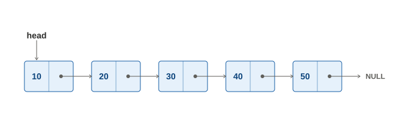
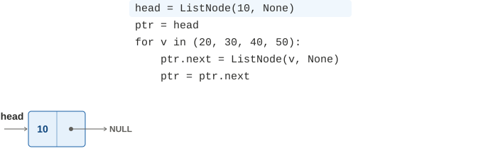
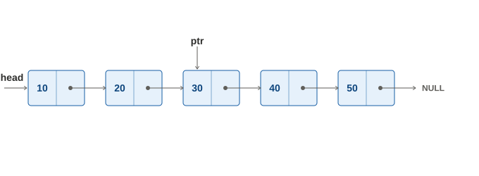

鏈結串列(linked list)是一種將資料串連起來的結構。這個結構可以比喻成一列火車，而我們可以從火車頭開始，依次的到每節車廂存取資料，如下：
圖源：維基百科當然，如果你在熟悉了記憶體的底層配置方式以後，再回來看這個比喻的話，應該比較像是把散落在各處的車廂，用傳送門依次的連接起來，而不是在同一軌道上把一批車廂連成一串。
Linked list 的基本操作，有取得某個位置的值、搜尋某個值是否存在、插入一個值、刪除某個位置的值、取得長度、取得是否為空、...等等。你可能知道，這些操作也可以用一般的陣列來達成；因此，「linked list」這個名稱，其實不是指一種 ADT，而是相對於一般陣列的另一種實作手段。以下會先介紹這種手段的各個基本細節，最後再跟陣列做比較。
而就像火車的每節車廂，可能搭載一些乘客或存放貨物，以及有連結器（或傳送門）讓你前往下一個車廂一樣；linked list 的具體結構，也是有許多節點，每個節點有它本身的資料，以及前往下個節點的傳送門，如下：

用程式建構出上圖的 linked list，以及走訪它的方法則如下：
class ListNode(object): def __init__(self, val, next_node=None): self.val = val self.next = next_node # Construct head = ListNode(10) ptr = head for v in (20, 30, 40, 50): ptr.next = ListNode(v) ptr = ptr.next # Traverse ptr = head while ptr: print(ptr.val) ptr = ptr.next上述的建構部分，其分解動作演示如下：

而若要取得特定位置的值，或者搜尋某個值是否存在，則可以很簡單的從走訪的部分修改；而取得長度的操作，則可以藉由多維護一個變數來進行。因此，以下只對比較複雜的插入和刪除來做說明。
要在 linked list 當中插入一個元素時，可以分成插在開頭、中間某處，或者結尾這三種狀況來討論，整體範例如下：
class ListNode(object): def __init__(self, val, next_node=None): self.val = val self.next = next_node # Construct head = ListNode(10) ptr = head for v in (20, 30, 40, 50): ptr.next = ListNode(v) ptr = ptr.next # Insert before head head = ListNode(5, next_node=head) # Point to 30 ptr = head.next.next.next # Insert between 30 and 40 ptr.next = ListNode(35, next_node=ptr.next) # Insert after tail ptr = head while ptr.next: ptr = ptr.next ptr.next = ListNode(55) # Traverse ptr = head while ptr: print(ptr.val) ptr = ptr.next其中例如將元素 insert 在中間某處的「ptr.next = ListNode(35, next_node=ptr.next)」，如果是用沒有物件功能的語言，例如 C 語言來實作的話，則需要拆成這幾個步驟來進行：
- 要把元素新增在誰後面，就先讓指標 ptr 指到它那邊。
- 建立一個新節點，並設定其值。
- 將新節點的 next，指向 ptr 所指的下一個。
- 將 ptr 所指的下一個，改指到新節點。
上述步驟的分解演示如下：

將分解步驟轉換回程式碼來看，則為如下（假設 ptr 已指到正確的位置）：
# Insert between 30 and 40 new = ListNode(35) new.next = ptr.next ptr.next = new刪除元素也一樣可以分成刪除開頭、中間某處，或者結尾這三種狀況；其中欲刪除結尾時，若節點只剩下一個，則相當於刪除開頭。整體範例如下：
class ListNode(object): def __init__(self, val, next_node=None): self.val = val self.next = next_node # Construct head = ListNode(10) ptr = head for v in (20, 30, 40, 50): ptr.next = ListNode(v) ptr = ptr.next # Delete head head = head.next # Point to 30 ptr = head.next # Delete 40 ptr.next = ptr.next.next # Delete tail ptr = head if ptr.next == None: ptr = None else: while ptr.next.next: ptr = ptr.next ptr.next = None # Traverse ptr = head while ptr: print(ptr.val) ptr = ptr.next在上述的範例中，你可能會想問：「把指標直接往下一個指，那原本的節點不就沒人指到它，所以再也找不到了嗎？」。事實上，在 Python 底層的標準做法中，如果一個物件沒有其他人指向它，則會立刻被系統回收。而如果你使用的是 C 等不會自動回收冗餘空間的語言，則需要自己回收。以下範例是用 Python 語言去類比 C 當中，刪除開頭與中間某處節點時應有的做法：
class ListNode(object): def __init__(self, val, next_node=None): self.val = val self.next = next_node # Construct head = ListNode(10) ptr = head for v in (20, 30, 40, 50): ptr.next = ListNode(v) ptr = ptr.next # Delete head tmp = head.next del head # Only an **ANALOGY** of free(head) head = tmp # Point to 30 ptr = head.next # Delete 40 tmp = ptr.next ptr.next = ptr.next.next del tmp # Only an **ANALOGY** of free(tmp) # Traverse ptr = head while ptr: print(ptr.val) ptr = ptr.next前述各項操作的時間複雜度，說明如下：
操作 Linked list Array 取得 index k 的值 需要一個一個一個的數，因此是 O(k)。 可以直接從開頭的位置 +k 跳過去，因此是 O(1)。 搜尋某個值是否存在 兩者都需要一個一個一個的看過才能確認，因此是 O(n)。 在 index k 的位置插入或刪除一個值 移動到該位置跟取值一樣是 O(k)，實際 insert/delete 是 O(1)。 移動到該位置跟取值一樣是 O(1)，實際 insert/delete 因為需要搬動後方元素，所以是 O(n-k)。 而關於實作上要選擇 linked list 或普通的陣列，你可以視程式碼易讀性、對不同操作數量的分布預期，甚至是系統環境特性等因素來決定。